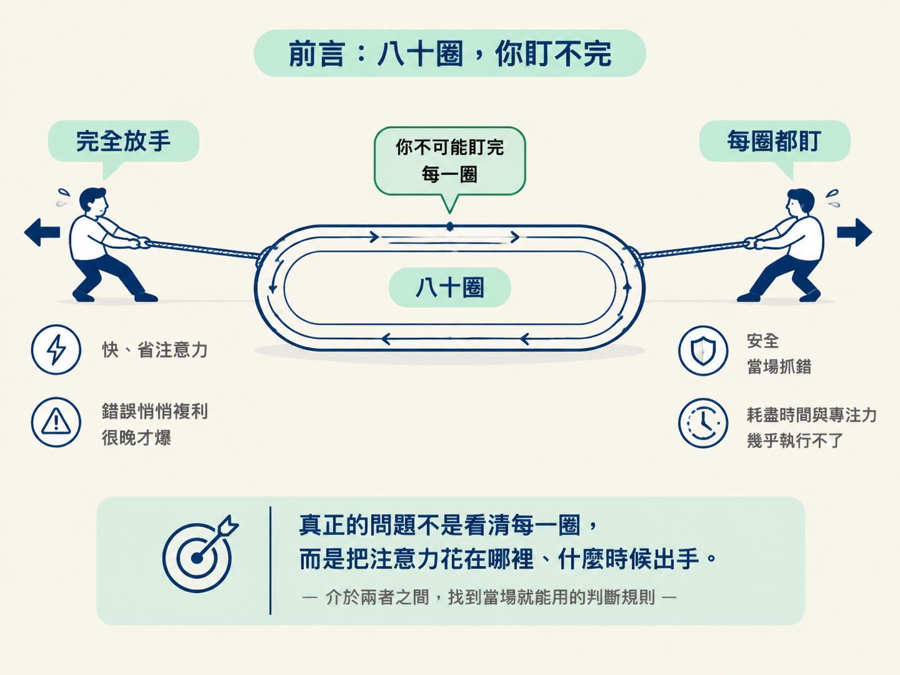
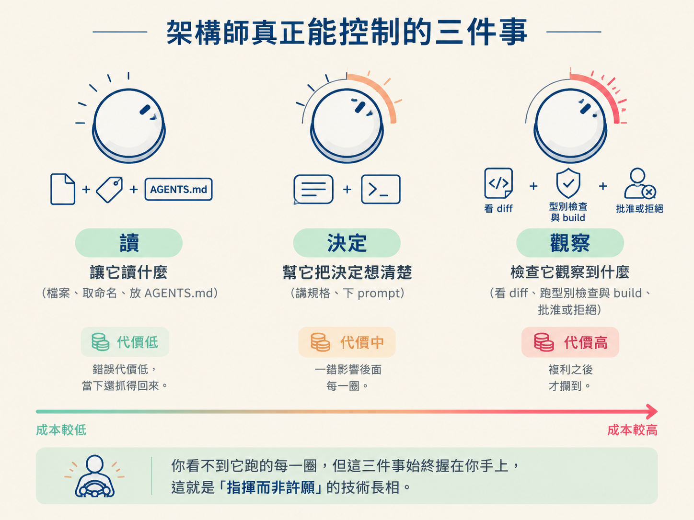

說出架構師真正能控制的三個地方（讓它讀什麼、幫它把決定想清楚、檢查它觀察到什麼），並判斷什麼時候該在迴圈早期介入、什麼時候可以放手。
上一節說過，錯誤會一圈一圈複利，而且你往往要等到很晚才看見症狀。這時候很自然會冒出一個念頭：那我每一圈都盯著看，不就解決了？
可惜做不到。一個複雜的功能跑下來可能是八十圈，你不可能每一圈都盯。就算真的硬撐著盯了，先垮掉的也會是你的專注力，而不是 agent。
所以真正的問題不是「怎麼看清每一圈」，而是你要把注意力花在哪裡、什麼時候出手。有兩股力量在拉扯：一邊是放任它自己跑，快又省事，但錯誤會悄悄複利；另一邊是每一圈都檢查，安全，卻幾乎執行不了，很多時候也只是白費力氣。這一節要給你的，是介於兩者之間、當場就能用的判斷規則。

| 做法 | 你付出什麼 | 抓錯的時機 | 適合什麼 |
|---|---|---|---|
| 完全放手 | 幾乎不花注意力 | 通常很晚才發現 | 小、可逆、能重來的任務 |
| 每圈都盯 | 大量時間與專注力 | 當場就抓到 | 幾乎不適合，八十圈你先累垮 |
現實裡的答案不是二選一，而是承認：你只能挑關鍵的那幾圈來施力。至於挑哪裡，其實有很明確的落點：你看不到它跑的每一圈，但有幾個東西始終握在你手上。
第一件是讓它讀什麼。你決定了它被允許讀到哪些材料。先把相關的檔案指給它、把命名取清楚、必要時放一份 AGENTS.md，它就少走很多冤枉路。回顧上一節的結論：錯誤的源頭常常就在「讀」這一拍，所以你對讀什麼的掌控，直接決定了它會不會從第一步就偏掉。
第二件是幫它把決定想清楚。你決定了你有多清楚地幫它做那個 Decide。規格講明白、prompt 下精準，它在岔路口就比較可能選對方向。這一拍你出的力，會一路放大到後面每一圈。
第三件是檢查它觀察到什麼。你決定了你要多仔細看它回報的東西：看它的 diff、讓它跑型別檢查與 build、在它套用修改前按下批准或拒絕。這是你最後的攔截點，但也是最貴的一個：等到這裡才糾正，通常已經是複利過好幾圈的東西了。
| 控制點 | 你做的事 | 出錯時的代價 |
|---|---|---|
| 讀 | 指檔案、取命名、放 AGENTS.md | 低，偏掉的當下還抓得回來 |
| 決定 | 講規格、下 prompt | 中，一錯會影響後面每一圈 |
| 觀察 | 看 diff、跑檢查、批准或拒絕 | 高，複利之後才攔到 |
把三件事連起來就是課程那句話：你看不到它跑的每一圈，但你能控制它被允許讀什麼、你能多清楚地幫它決定，還有你要多仔細檢查它觀察到什麼。所謂「指揮而非許願」，技術上真正的樣子就是這三件事。

把上面三件事翻成可以自我測試的問句，你就有了一套即時判準：
三題的答案都是「有、清楚、要看」，這一圈就可以放手讓它繼續跑。只要有任何一題是「沒有、模糊、先不看」，那一圈就是你該出手的地方。
這套問句之所以好用，是因為它逼你在錯誤的源頭附近先檢查一次。你不會一路盯到結果才發現不對，而是提早到讀與決定這兩拍去看。
「每圈都盯」在什麼時候其實是浪費？當任務很小、完全可逆、重做成本低的時候。改一句文案、調一個 CSS 數值，錯了再跑一圈就好；你每一圈都盯，只是在拖慢自己。這種任務上，放手的收益遠大於風險。
反過來，「放手」在什麼時候會出事？當錯誤的讀取或決定會複利，而且要很久以後才看得出症狀時，這正是上一節講的那種情境。那種任務你越早介入越便宜，原因很簡單：錯誤通常是從「讀」和「決定」這兩拍開始的，等到你在 Observe 才糾正，修的已經是被帶歪好幾圈的結果。
你不可能盯著八十圈，所以重點是挑地方使力。架構師能控制三件事：讓它讀什麼、幫它把決定講清楚、多仔細檢查它觀察到什麼。任務小、可逆、便宜時可以放手；錯誤會複利、症狀很晚才出現時，就要在讀與決定這兩拍早點介入。記住那個數字：第 3 圈抓到，永遠比第 30 圈便宜。
臨走前把三個問題再念一次：它讀到對的東西了嗎？我幫它把決定講清楚了嗎？我要不要現在看它回報了什麼？三題都是肯定才放手，有一題打上問號，就在那一圈介入。帶著這個檢查表離開，你就有了看顧這個迴圈的基本姿勢。